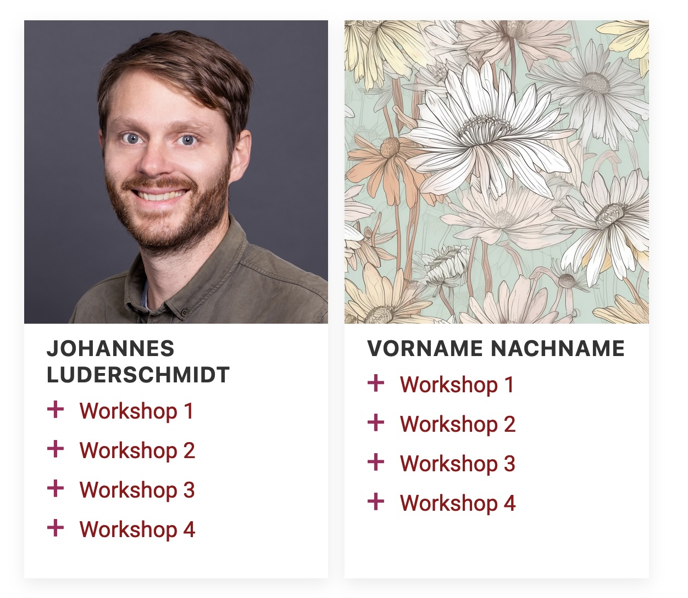
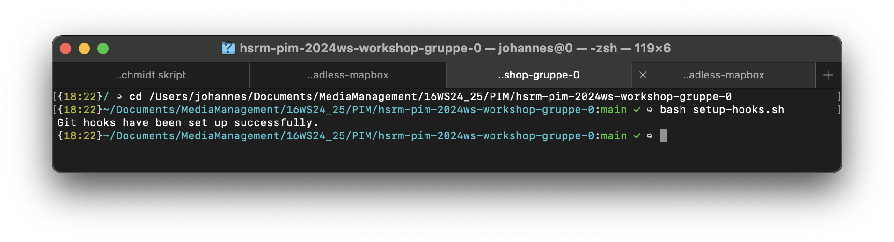

Produktion Interaktiver MedienWorkshop 2: Responsive
Abgabe: Dienstag, 18. November 2025, 23:59 Uhr per GitHub.
Ziel dieses Workshops ist es, Sie mit der Arbeit im Team und mit UIkit vertraut zu machen. Außerdem erarbeiten wir eine gemeinsame Website mit Ihren Workshop-Ergebnissen. Ich habe Sie deshalb in Gruppen eingeteilt, die nicht den Projektgruppen entsprechen. Dies ermöglicht es Ihnen zu erlernen, wie die einzelnen Schritte beim Arbeiten im Team mit git, VSCode und GitHub sind.
Visual Studio und git einrichten
- Richten Sie Ihre Arbeitsumgebung ein.
- Manchmal dauert die Installation etwas länger. Nutzen Sie die Zeit, um sich die Git-Einführung durchzuschauen / durchzuarbeiten.
Repository einrichten
Die Workshop-Webseite soll sich zukünftig aus Kacheln mit jeweils einem Portrait von Ihnen und darunter den Links auf Ihre Workshop-Ergebnisse aufbauen, ungefähr so:

Deshalb werden wir in diesem Workshop die Grundlagen für diese Seite legen. Dazu müssen Sie folgende Schritte durchführen.- Jede:r von Ihnen wurde von mir in eine Gruppe eingeteilt, die jeweils aus vier bis fünf Personen besteht. Zu jeder Gruppe gibt es ein Repository in GitHub, zu dem ich Sie eingeladen habe. Nehmen Sie die Einladung an, falls das noch nicht geschehen ist.
- Klonen Sie das Repository, zu dem ich Sie eingeladen habe, mit VSCode in ein Verzeichnis, in dem sie es gut wiederfinden (also nicht irgendwo in Downloads). Diesen Schritt müssen Sie nur einmal machen! Wie Sie mit VSCode mit git klonen und generell arbeiten, finden Sie hier.
- Dieses Arbeitsverzeichnis öffnen Sie bitte in VSCode und machen sich mit der Struktur vertraut.
- Wechseln Sie in der git-Bash (Windows) oder im Terminal (macOS) in das Repository-Verzeichnis. Das tun Sie, indem Sie
cdgefolgt von einem Leerzeichen eingeben, den Repository-Ordner im Explorer (Windows) bzw. Finder (macOS) auf git-Bash bzw. das Terminal ziehen und Enter drücken. Ich habe Ihnen ein Skript in das Repository gelegt, das git so konfiguriert, dass Sie (hoffentlich) bei der Benamung von Dateien weniger Fehler machen. Führen Sie dieses Skript in der git-Bash oder im Terminal aus:bash setup-hooks.shAls Ergebnis sollten Sie erhalten "Git hooks have been set up successfully". Falls nicht, fragen Sie bitte mich gerne.

Git: Committen und Pushen
- Kopieren Sie den beim letzten mal erstellten Ordner
vorname-nachname/in das Arbeitsverzeichnis. Ab jetzt arbeiten Sie fast nur noch in diesem Ihrem Verzeichnis! - Benennen Sie die
index.htmlinworkshop1.htmlum. - Überprüfen Sie, ob alle Dateinamen in diesem Verzeichnis klein und ohne Umlaute geschrieben sind und das Verzeichnis keine zu großen Bilder enthält.
- Sicherheitshalber noch mal einen Git-Pull durchführen.
- Committen Sie Ihre Änderungen und geben dabei eine Zusammenfassungszeile an.
- Pushen Sie Ihre Änderungen.
- Schauen Sie sich das Repository auf GitHub an.
UIkit: Layout anlegen
- Kopieren Sie die Daten aus
data-workshop/basein Ihrvorname-nachname/Verzeichnis (Achtung: Überschreiben Sie ihr vorhandenes JS und CSS nicht sondern verwenden sie diese Dateien ggf weiter). - Benennen Sie die
base.htmlworkshop2.htmlum. - Füllen Sie nun die
main-Spalte mit gegliedertem Text. Diesen Text müssen Sie nicht selbst schreiben. Dafür können Sie z.B. Blindtext verwenden oder einen Wikipedia-Artikel kopieren. - Gliedern Sie die Hauptabschnitte in
<section>-Abschnitte. Jede davon sollte eine Überschrift (<h2>) haben. - Bauen Sie nun rund um diesen Beispieltext ein Layout mit UIkit-Grids auf. Wenden Sie dabei das in der Vorlesung Erlernte an.
- Verwenden Sie die
.uk-container-Klasse zum Begrenzen der Hauptspalten. - Verwenden Sie
.uk-gridum die Texte in Spalten zu gliedern. - Nutzen sie
.uk-cardListen, um kurze Informationsteile hervorzuheben. - Sie können einem Element mehrere Klassen zuweisen (z.B.
class="uk-width-1-2 uk-card")
- Verwenden Sie die
- Passen Sie die Grid-Klassen mit
@s @m @lusw. so an, dass z.B. Spalten erst ab den gewünschten Breakpoints nebeneinanderstehen. Arbeiten Sie dabei "mobile first". - Passen Sie die Schriften, Farben und Hintergründe der Seite nach Ihrem Geschmack an.
Testen, verlinken und veröffentlichen
- Testen Sie die in diesem Workshop erzeugten Dateien mit dem W3C-Validator. Sind alle Datei- und Verzeichnisnamen klein und ohne Sonderzeichen geschrieben?
- Ergänzen Sie in der index.html Ihres Repositories Ihr Portrait und die Verlinkungen
- Duplizieren Sie dazu die
articleVorlage in derindex.html - Referenzieren Sie Ihr Portrait-Photo (das kleiner gerechnet in ihrem Namens-Verzeichnis
liegen sollte) in
<img src=".."> - Ergänzen Sie Ihren Namen
- Verlinken Sie Ihre Workshop-Ergebnisse (Link auf ihren Unterordner)
- Duplizieren Sie dazu die
- Pushen Sie Ihren Stand auf den Server.
- Testen Sie Ihre Seiten hier auf dem Server. Auch mit dem Smartphone.